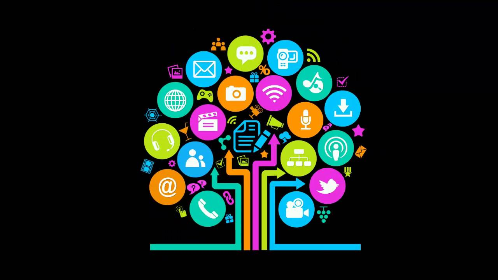

<main>
    <section class="welcome__main">
        <article class="welcome__description">
            <h1 class="text-center text-3xl font-bold text-blueGray-700">Bienvenido {{nombreUsuario.nombre | uppercase}} !!</h1>

            <div class="mt-4 flex justify-center">
                <picture>
                    
                </picture>
            </div>

            <p class="px-10 text-justify text-lg">
                <span class="font-semibold">Un gusto encontrarte aquí</span>, en este OVA encontrarás todo sobre la informática educativa, una disciplina que integra la formación educativa con la implementación de Tecnologías de Información y Comunicación (TIC) para enriquecer los procesos de  enseñanza-aprendizaje impartido por los docentes. La herramienta principal utilizada será el computador, que actuará como herramienta mediadora para el aprendizaje, fundamentada en las teorías educativas.

                <br><br>

                El <span class="font-semibold">proposito</span> del OVA es ayudarte a ti a conocer, apropiarte y aprender todo lo relacionado a la Informática Educativa. Para que al finalizar su estudio, tenga las suficientes competencias y conocimientos que conlleva dicha asignatura.
            </p>
        </article>

        <article class="welcome__topics px-10 mt-8">
            <h2 class="text-center text-2xl uppercase font-bold text-blueGray-700">Contenidos</h2>

            <p class="text-justify text-lg mt-4">
                Temas y subtemas que encontrará en el OVA sobre el microcurrículo de la materia Informática Educativa, se organizó a nivel jerárquico enumerando con niveles los temas que se plantean en el OVA. 
            </p>

            <div class="mb-4">
                <ul class="text-justify text-lg px-10 mt-4">
                    <li class="mb-5"><span nz-icon nzType="read" nzTheme="outline" class="font-semibold"> TEMA 1. </span> Introducción a la Informática educativa y sus generalidades</li>
                    <li class="mb-3"><span nz-icon nzType="read" nzTheme="outline" class="font-semibold"> TEMA 2. </span> Software educativo
                        <ul class="mt-2 px-10">
                            <li class="mb-3"><span class="font-semibold"> SUBTEMA 2.1.</span> Definición del software educativo.</li>
                            <li class="mb-3"><span class="font-semibold"> SUBTEMA 2.2.</span> Estructura básica de los programas educativos: entorno de
                                comunicación, bases de datos y motor.</li>
                            <li class="mb-3"><span class="font-semibold"> SUBTEMA 2.3.</span> Tipologias.</li>
                            <li class="mb-5"><span class="font-semibold"> SUBTEMA 2.4.</span> Funciones del software educativo.</li>
                        </ul>
                    </li>
                    <li class="mb-3"><span nz-icon nzType="read" nzTheme="outline" class="font-semibold"> TEMA 3. </span> Generalidades de la educación virtual
                        <ul class="mt-2 px-10">
                            <li class="mb-3"><span class="font-semibold"> SUBTEMA 3.1.</span> ¿Qué son los Objetos de Aprendizaje?.</li>
                            <li class="mb-3"><span class="font-semibold"> SUBTEMA 3.2.</span> ¿Qué son los Sistema de gestión de aprendizaje (LMS)?.</li>
                            <li class="mb-3"><span class="font-semibold"> SUBTEMA 3.3.</span> Herramientas Exe-Learning y Reload.</li>
                            <li class="mb-3"><span class="font-semibold"> SUBTEMA 3.4.</span> ¿Qué es SCORM?.</li>
                            <li class="mb-5"><span class="font-semibold"> SUBTEMA 3.5.</span> ¿Qué es LOM?.</li>
                        </ul>
                    </li>
                    <li class="mb-3"><span nz-icon nzType="read" nzTheme="outline" class="font-semibold"> TEMA 4. </span> Metodología para el desarrollo de Objetos Virtuales de Aprendizaje
                        <ul class="mt-2 px-10">
                            <li class="mb-3"><span class="font-semibold"> SUBTEMA 4.1.</span> Fase de análisis y obtención.</li>
                            <li class="mb-3"><span class="font-semibold"> SUBTEMA 4.2.</span> Fase de diseño.</li>
                            <li class="mb-3"><span class="font-semibold"> SUBTEMA 4.3.</span> Fase de construcción.</li>
                            <li class="mb-3"><span class="font-semibold"> SUBTEMA 4.4.</span> Fase de evaluación.</li>
                            <li class="mb-5"><span class="font-semibold"> SUBTEMA 4.5.</span> Fase de implementación.</li>
                        </ul>
                    </li>
                    <li class="mb-3"><span nz-icon nzType="read" nzTheme="outline" class="font-semibold"> TEMA 5. </span> Herramientas para el desarrollo de Objetos Virtuales de Aprendizaje
                        <ul class="mt-2 px-10">
                            <li class="mb-3"><span class="font-semibold"> SUBTEMA 5.1.</span> Herramientas de autor.</li>
                            <li class="mb-5"><span class="font-semibold"> SUBTEMA 5.2.</span> Herramienta de diseño de actividades.</li>
                        </ul>
                    </li>
                    <li class="mb-3"><span nz-icon nzType="rocket" nzTheme="outline" class="font-semibold"> EVALUACIÓN FINAL SUMATIVA. </span> Se evaluán los cinco (5) temas.</li>
                </ul>
            </div>

            <div class="welcome__btn-start flex justify-center mt-10 mb-6">
                <div class="btn-start">
                    <button nz-button nzType="primary" nzSize="large" nzBlock>
                        <a routerLink='/estudiante/tema/1' class="text-white">INICIAR</a>
                    </button>
                </div>
            </div>
        </article>
    </section>

    <!-- <div nz-row class="mt-4 flex items-center justify-center">
        <div nz-col nzSpan="24 justify-center">
            
        </div>
    </div>
    <div nz-row class="mt-2">
        <div nz-col nzSpan="24">
            <section class="welcome__intro px-10 text-justify">
                <article>
                    <h3 class="text-red-600 text-3xl font-semibold">INTRODUCCIÓN</h3>
                    <p class="text-lg mt-5">
                        La educación ha sido uno de los pilares fundamentales para el crecimiento de la sociedad, cada vez el mundo, sociedad está en constante cambio en la que tiene como finalidad adquirir conocimientos para lograr crecer, sin embargo, desde hace décadas la forma de impartir la educación siempre ha sido la misma en la cual consiste básicamente interacción aula, profesor y estudiante, no solo la forma de impartir siempre ha sido la misma, sino también en los ambientes en que se imparte, pues siempre ha sido en un aula de clases. Esta forma de educación gracias a la tecnología está innovando para mejorar la forma de adquirir conocimientos, por medio de los objetos virtuales de aprendizaje que proporcionan nuevas herramientas de enseñanza y aprendizaje de la mano de herramientas tecnológicas e innovadoras. 
                    </p>
                </article>
            </section>
        </div>
    </div>
    
    <section class="mt-10">
        <h3 class="text-red-600 text-center text-2xl font-semibold">OVA</h3>
        <div nz-row class="px-8 mt-4">
            <div nz-col nzXs="24" nzSm="24" nzMd="24" nzLg="24" nzXl="8" class="flex justify-center p-5">
                
            </div>
            <article nz-col nzXs="24" nzSm="24" nzMd="24" nzLg="24" nzXl="16" class="mt-2 flex justify-start">
                <p class="text-lg text-justify">
                    Los Objetos de Aprendizaje se definen como cualquier entidad, digital o no digital,
                    que puede ser utilizado, reutilizados o referenciados durante el aprendizaje apoyado con la
                    tecnología. Ejemplos de enseñanza apoyada por la tecnología incluyen los sistemas basados
                    en computadoras, los entornos de aprendizaje interactivos, los sistemas inteligentes de
                    instrucción asistida por computadora, los sistemas de aprendizaje a distancia y ambientes de
                    aprendizaje colaborativo. Ejemplos de objetos de aprendizaje incluyen los contenidos
                    multimedia, los contenidos educativos, los objetivos de aprendizaje, software y herramientas
                    de software de instrucción, y las personas, organizaciones o acontecimientos que se hace
                    referencia en la tecnología con el apoyo de aprendizaje.
            </article>
        </div>
    </section>

    <section class="mt-10">
        <h3 class="text-red-600 text-center text-2xl font-semibold uppercase">Informatica Educativa</h3>
        <div nz-row class="px-8 mt-4">
            <article nz-col nzSpan="24">
                <p class="text-lg text-justify mb-6">
                    Es una disciplina que estudia el uso, efectos y consecuencias de las tecnologías de la información en el proceso educativo. La rama de las ciencias de la educación que se encarga del estudio y desarrollo de las aplicaciones de la informática en el proceso docente-educativo” Abarca el estudio, diseño e implementación de soluciones que incorporan Tecnologías de Información y Comunicación (TIC) a los procesos educacionales, en distintos ámbitos: la gestión y administración de los centros educacionales; la gestión curricular; el proceso de enseñanza-aprendizaje a nivel de aula; y la evaluación de aprendizajes”.
                </p>

                <picture class="flex justify-center">
                    
                </picture>

                <p class="text-lg text-justify mt-6">
                    Podemos definir entonces la informática educativa como la disciplina que integra la educación y la informática para enriquecer el proceso de enseñanza- aprendizaje, teniendo al computador como herramienta mediadora para el aprendizaje, fundamentada en las teorías educativas. Debe orientarse en gran medida a los aspectos pedagógicos del empleo del computador y no sólo al manejo de las herramientas informáticas, como se da en el contexto de la realidad actual.
                </p>

                <p class="text-lg text-justify mt-6">
                    Tomado de: <cite>Dayalis Vargas Sep 07, 2009</cite> a través de <a href="http://www.slideshare.net/dayalis/tema-1informatica-educativa"> http://www.slideshare.net/dayalis/tema-1informatica-educativa</a>
                </p>

            </article>
        </div>
    </section> -->

</main>
